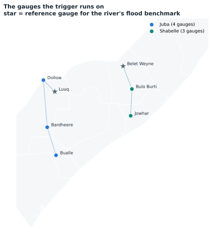
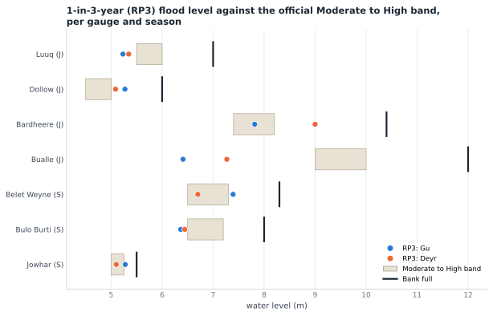
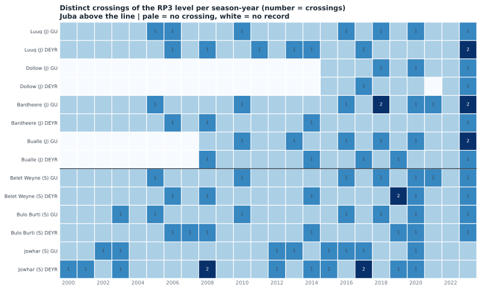
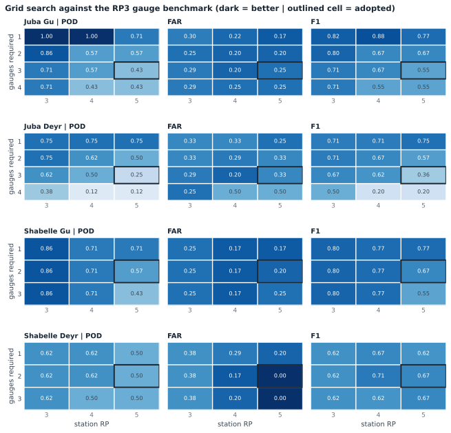
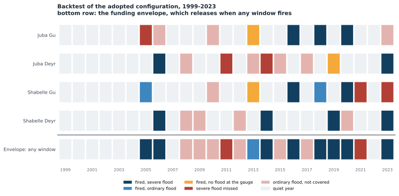

1The trigger
Four windows, one source each, so a window is one product plus one rule. Inside a window every point's flow is compared with its own return-period threshold and the window fires when enough points cross in the same season. At least two must agree, never all of them. The reanalysis view is the calibration basis; the forecasts view refits the same rule on the forecast archives, and the two are never combined.
Calibrated on 1999 to 2023, 25 years, with thresholds available from 1-in-3 to 1-in-6.
| River | Season | Source | Gauge threshold | Gauges that must agree | Tracking rho | Would have fired in |
|---|---|---|---|---|---|---|
| Juba | Gu | Google GRRR | 1-in-5 | 3 of 4 | 0.86 | 2013, 2016, 2018, 2020 |
| Juba | Deyr | Google GRRR | 1-in-5 | 3 of 4 | 0.60 | 2006, 2019, 2023 |
| Shabelle | Gu | Google GRRR | 1-in-5 | 2 of 3 | 0.77 | 2005, 2013, 2016, 2018, 2020 |
| Shabelle | Deyr | GloFAS v5 | 1-in-5 | 2 of 3 | 0.81 | 2006, 2014, 2019, 2023 |
Envelope: 1-in-2.9 (9 of 25 years), catching 8 of the 10 severe years. Fired with no recorded flood: never.
Calibrated on 2003 to 2023, 21 years, with thresholds available from 1-in-3 to 1-in-5.
| River | Season | Source | Gauge threshold | Gauges that must agree | Tracking rho | Would have fired in |
|---|---|---|---|---|---|---|
| Juba | Gu | GloFAS v4 | 1-in-3 | 2 of 4 | 0.83 | 2005, 2010, 2013, 2016, 2018, 2020, 2023 |
| Juba | Deyr | GloFAS v4 | 1-in-5 | 3 of 4 | 0.85 | 2015, 2017, 2023 |
| Shabelle | Gu | GloFAS v4 | 1-in-4 | 2 of 3 | 0.84 | 2005, 2010, 2016, 2018 |
| Shabelle | Deyr | GloFAS v4 | 1-in-5 | 2 of 3 | 0.67 | 2010, 2013, 2019, 2020 |
Envelope: 1-in-2.2 (10 of 21 years), catching 6 of the 10 severe years. Fired with no recorded flood: never. This is the closest rate this evidence supports; nothing lands on 1-in-3.
2Readiness leg
Readiness runs at leads 8 to 12 on GloFAS v4, the only archive that covers those leads, with thresholds fitted on that series and never below 1-in-3. It is sized to fire at least as often as the action leg and at most twice as often, so it buys preparation time without becoming routine.
| River | Season | Gauge threshold | Gauges that must agree | Readiness years | Precedes action years |
|---|---|---|---|---|---|
| Juba | Gu | 1-in-3 | 2 of 4 | 2004, 2005, 2006, 2010, 2013, 2016, 2018, 2020 | 4 of 4 |
| Juba | Deyr | 1-in-4 | 2 of 4 | 2005, 2006, 2015, 2017, 2023 | 2 of 3 |
| Shabelle | Gu | 1-in-3 | 2 of 3 | 2005, 2006, 2010, 2013, 2016, 2018, 2020 | 5 of 5 |
| Shabelle | Deyr | 1-in-5 | 2 of 3 | 2013, 2014, 2019, 2020 | 2 of 4 |
3Points monitored
| River | Points monitored |
|---|---|
| Juba | 4: luuq, dollow, bardheere, bualle |
| Shabelle | 3: belet_weyne, bulo_burti, jowhar |

4Where the thresholds sit


5The grid the rule came from

6Backtest

7What this variant does not settle
- The reanalysis cannot choose the model. Many assignments reach the same activation years, so the model per window rests on skill at lead time, not on this backtest.
- Google cannot be calibrated on its own forecasts. Its archive starts in 2016, and 1-in-3 needs about 12 years, so a Google window is necessarily calibrated on the retrospective and only checked at lead time.
- Two Juba points can no longer be verified. Bardheere's gauge record ends in 2023 and Bualle's in 2024, so both can be forecast at but not checked against observations from here on.
The mixed-model design remains published at trigger, and the full data-source review at summary.